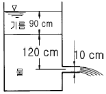
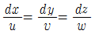
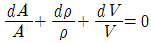
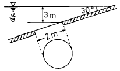

소방설비산업기사(기계) (2004-03-07 기출문제)
1과목: 소방원론
1. 건물에서 초기의 발화 위험물에 대한 화재하중을 감소시키는 방법은?
- 방화구획의 세분화
- 내장재 불연화
- 소화시설의 증강
- 건물 높이의 제한
(정답률: 37%)

2. 철골구조의 내화피복 종류로서 내화성이 가장 좋은 것은?
- 라스 몰탈바름
- 석면 뿜칠과 암면 뿜칠
- 경량 성형판 붙임
- 인공 경량 골재 콘크리트 쌓기
(정답률: 알수없음)
3. 건물화재시 후레쉬 오버의 영향이 가장 적은 것은?
- 내장재료
- 개구율
- 화원의 크기
- 방화구획
(정답률: 알수없음)
4. 화재시의 연소 생성물에 속하지 않은 것은?
- 불꽃
- 수증기
- 연기
- 수소가스
(정답률: 알수없음)
5. 자연배연과 관계가 가장 깊은 것은?
- 스모그 타워
- 건물에 설치된 창
- 송풍기 설치
- 배연기 설치
(정답률: 64%)
6. 발화의 요인인 정전기를 발생하도록 하는 것은?
- 마찰을 적게 한다.
- 도전성 재료를 사용한다.
- 접촉되는 두 가지 물체를 이격시킨다.
- 고전압에 의한 이온화법을 사용한다.
(정답률: 10%)
7. 다음 류별위험물중 다량의 주우냉각소화로 적합치 못한 것은?
- 제1류 위험물
- 제2류 위험물
- 제5류 위험물
- 제6류 위험물
(정답률: 35%)
8. 산소의 공기중 확산속도는 수소의 공기중 확산속도에 비해 몇 배정도 인가? (단, 산소의 분자량은 32, 수소는 2로 본다.)
- 4
- 16
- 1/4
- 1/16
(정답률: 30%)
9. 물 또는 습기와 접촉하면 급격히 발화하는 물질은?
- 농황산
- 금속 나트륨
- 황린
- 아세톤
(정답률: 93%)
10. 연소현상에 대한 설명으로 가장 적합한 것은?
- 산소와 열을 수반하는 반응이다.
- 산소와 반응하는 것이다.
- 빛과 열을 수반하면서 산소와 반응하는 것이다.
- 가연성 가스를 발생시키기 위한 반응이다.
(정답률: 알수없음)
11. 금속분 화재시 주수소화하면 아니되는 이유는?
- 산소가 발생하여 연소를 돕기 때문에
- 유독가스가 발생하여 인체에 해를 주기 때문에
- 질소가 발생하여 소화자가 질식할 우려가 있으므로
- 수소가 발생하여 연소를 더욱 촉진시키므로
(정답률: 60%)
12. 연소생성물 중 가장 독성이 큰 것은?
- 포스겐
- 염화수소
- CO
- CO2
(정답률: 알수없음)
13. 목재의 연소에 영향을 주지 않는 것은?
- 열전도율
- 가열속도
- 목재의농도
- 수분의 함유량
(정답률: 60%)
14. 가연물이 될 수 있는 조건으로 옳지 않은 것은?
- 산화되기 쉬울것
- 열전도율이 클 것
- 활성화 에너지가 적을 것
- 산소와결합시 발열량이 클 것
(정답률: 55%)
15. 이산화탄소(CO2)소화약제에 대한 설명으로 틀린 것은?
- 상온에서 무색 무취인 기체이다.
- 공기보다 비중이 무겁다.
- 전기 절연성이 좋고 가연성 액체 등이 위험물화재에 적응성이 있다.
- 독성이 없어 사람이 많은 곳에 사용해도 무방.
(정답률: 67%)
16. 가연물질의 조건으로 옳지 않은 것은?
- 산화하기 쉽고, 산소와 결합시 발열량이 커야 한다.
- 연소반응을 일으키는 활성화 에너지가 커야 한다.
- 열의 축적이 용이하여야 한다.
- 연쇄반응을 일으키기 쉬워야 한다.
(정답률: 85%)
17. 할로겐화합물 소화약제의 원자중 연쇄반응 차단에 의한 소화효과가 가장 큰 원자는?
- F(불소)
- Cl(염소)
- Br(브롬)
- Ｉ(요오드)
(정답률: 18%)
18. 가연물질이 완전 연소하면 어떤 물질이 발생하는가?
- 산소
- 물, 일산화탄소
- 일산화탄소, 이산화탄소
- 이산화탄소, 물
(정답률: 알수없음)
19. 할론 소화약제 중 소화효과가 가장 좋고 독성이 가장 약한 것은?
- 할론1301
- 할론104
- 할론1211
- 할론2402
(정답률: 50%)
20. 위험물 탱크의 누유 검사관의 설치기준에 대한 설명으로 틀린 것은?
- 이중관으로 하여야 한다.
- 재료는 금속관으로 하여야 한다.
- 재료는 경질합성수지관으로 하여야 한다.
- 관의 말단에는 소공이 있어야 한다.
(정답률: 8%)
2과목: 소방유체역학
21. 압력 2MPa, 온도 250℃의 공기가 이상적인 가역단열팽창을 하여 압력이 0.2MPa로 변화할 때 변화후 온도는 몇 K인가? (단, 공기의 비열비는 1.4 이다.)
- 265
- 271
- 278
- 283
(정답률: 58%)
22. 송풍기의 전압이 150mmAq, 풍량이 20m3/min, 전압효율이 0.6일 때 축동력은 몇 W 인가?
- 463
- 816
- 1110
- 1264
(정답률: 알수없음)
23. 유동손실을 유발하는 액체의 점성 즉, 점도를 측정하는 장치에 관한 설명으로 옳은 것은 ?
- Stomer 점도계는 하겐-포아젤 법칙을 기초로한 방식이다.
- 낙구식 점도계는 Stokes의 법칙을 이용한 방식이다.
- Saybolt 점도계는 액중에 잠긴 원판의 회전저항의 크기로 측정한다.
- Ostwald 점도계는 Newton의 점성법칙을 이용한 방식이다.
(정답률: 62%)
24. 소화약제에 관한 설명 중 옳지 않은 것은?
- 소화약제는 현저한 독성이나 부식성이 없어야 한다.
- 수용액 및 액체상태의 소화약제는 침전물이 발생하지 않아야 한다.
- 수용액 및 액체상태의 소화약제는 결정의 석출이나 용액의 분리가 생기지 않아야 한다.
- 소화약제는 열과 접촉할 때를 제외하고는 현저한 독성이나 부식성의 가스를 발생하지 않아야 한다.
(정답률: 알수없음)
25. 수용성 유류화재에 사용하는 포소화 약제에 관련된 설명중 틀린 것은?
- 수용성 유류라함은 알콜류 등을 의미한다.
- 수용성 유류는 극성이 있는 분자구조를 가진다.
- 석유류 화재에 적합한 포소화 약제는 수용성에도 적합하다.
- 수용성 유류에는 내알콜포 소화약제가 적합하다.
(정답률: 50%)
26. 관로의 부차적 손실에서 손실계수 K=6인 배관에 유속이 2 m/s라면 이때 손실은 수두로 몇 m 인가?
- 0.523
- 0.876
- 1.024
- 1.225
(정답률: 알수없음)
27. 그림에서 손실을 무시할 때 원형 노즐로부터 나오는 유량은 약 몇 m3/s 인가? (단, 기름의 비중은 0.75이다.)

- 0.0476
- 0.721
- 0.0975
- 0.246
(정답률: 알수없음)
28. 다음 중 연속방정식이 아닌 것은 ? (단, u,v,w는 x,y,z방향의 속도성분, A:단면적, ρ:밀도 V:속도)


- d(ρAV) = 0
- ρAV = C
(정답률: 알수없음)
29. 직경 2 m의 원형 수문이 그림과 같이 수면에서 3 m 아래에 30° 각도로 기울어져 있을 때 수문의 자중을 무시하면 수문이 받는 힘은 몇 kN 인가?

- 107.7
- 94.2
- 78.5
- 62.8
(정답률: 30%)
30. 화면에 방사(放射)하였을때 질식(窒息)효과가 나타나는 소화약제가 아닌 것은?
- CO2
- N2
- NaHCO3
- CCl4
(정답률: 알수없음)
31. 관속을 흐르는 물의 압력 손실이 40 kPa 이고 유량이 3 m3/s 이면 물의 동력 손실은 몇 kW 인가?
- 120
- 214
- 88.7
- 157.6
(정답률: 알수없음)
32. 펌프의 공동현상(cavitation) 에 관한 설명 중 적당한 것이 아닌 것은 ?
- 소음과 진동이 생긴다.
- 펌프의 효율이 상승된다.
- 깃에 심한 부식이 생긴다.
- 양정과 동력이 급격히 저하한다.
(정답률: 60%)
33. 다음 중 운동량의 단위는 어느 것인가?
- N
- J
- N·s2/m
- N·s
(정답률: 25%)
34. 분말소화설비의 소화약제 중에서 차고 또는 주차장에 사용할 수 있는 것은?
- 탄산수소나트륨을 주성분으로 한 분말
- 탄산수소칼륨을 주성분으로 한 분말
- 탄산수소칼륨과 요소가 화합된 분말
- 인산염을 주성분으로 한 분말
(정답률: 70%)
35. 증기 터빈의 입구와 출구에서 증기의 비엔탈피가 각각 h1= 640 kJ/kg, h2= 600 kJ/kg이고 증기의 속도는 각각 V1= 30 m/s, V2= 100 m/s이다. 터빈을 거치는 동안 열손실과 위치에너지 변화가 없다면 증기 1 kg이 한 일은 대략 몇 kJ/kg 인가?
- 19.2
- 35.5
- 40.8
- 44.5
(정답률: 알수없음)
36. 온도가 20℃, 압력이 294kPa인 공기의 비중량은 몇 N/m3 인가? (단, 공기의 기체상수는 287 N.m/kg.K 이다.)
- 32.3
- 33.3
- 34.3
- 35.3
(정답률: 알수없음)
37. 안지름이 5 ㎝인 직원관에 기름이 속도 1.5 m/s의 층류로 흐른다. 관의 길이가 10 m라면 압력손실은 몇 kPa 인가? (단, 기름의 밀도는 1264 kg/m3, 동점성계수는 0.00118 m2/s이다.)
- 286.4
- 226.4
- 0.⑤684
- 188.6
(정답률: 알수없음)
38. 수두가 9 m일 때 오리피스에서 물의 유속이 11 m/s이다. 속도계수를 구하면 ?
- 0.97
- 0.95
- 0.83
- 0.81
(정답률: 알수없음)
39. 계기압력이 1.2 MPa 이고 대기압이 720mmHg일 때 절대압력은 몇 kPa 인가?
- 1280
- 1288
- 1296
- 1302
(정답률: 70%)
40. 다음 압력값 중 가장 값이 큰 것은?
- 0.1atm
- 0.2MPa
- 1.3kgf/cm2
- 17mAq
(정답률: 알수없음)
3과목: 소방관계법규
41. 방염대상물품이 아닌 것은?
- 전시용 합판
- 호텔에서 사용하는 매트레스
- 카페트
- 대도구용 합판
(정답률: 20%)
42. 화재경계지구의 지정은 누가 하는가?
- 시.도지사
- 소방서장
- 소방본부장
- 행정자치부장관
(정답률: 알수없음)
43. 다음중 간이탱크저장소의 통기관의 지름은 몇 mm이상으로 하는가?
- 20mm
- 25mm
- 30mm
- 40mm
(정답률: 알수없음)
44. 스프링클러설비를 면제할 수 있는 때는 어떤 설비가 기준에 적합하게 설치된 때인가?
- 옥외소화전설비
- 옥내소화전설비
- 동력펌프소화설비
- 물분무등소화설비
(정답률: 알수없음)
45. 관광휴게시설에 해당되는 것은?
- 어린이회관
- 박물관
- 미술관
- 박람회장
(정답률: 20%)
46. 화재원인과 피해의 조사에 관한 설명으로 맞는 것은?
- 화재원인과 피해의 조사는 소화활동과 동시에 시작하여야 한다.
- 화재원인과 피해의 조사는 소화활동과 관계없이 시작하여야 한다.
- 화재원인과 피해의 조사는 소화활동이 끝나고 경찰의 수사가 끝난 다음에 시작하여야 한다.
- 화재원인과 피해의 조사는 소화활동이 끝난 직후에 시작하여야 한다.
(정답률: 알수없음)
47. 소방시설공사업을 등록하려고 할 때 등록의 결격사유자로 분류되지 않는 사람은?
- 금치산자
- 한정치산자
- 미성년자
- 파산자로서 복권되지 아니한 자
(정답률: 34%)
48. 석유판매취급소에 대한 설명으로 옳은 것은?
- 복층건축물에 설치하여야 한다.
- 건축물의 지하층에 설치하여야 한다.
- 작업실을 두어야 하며, 점포는 두어서는 아니된다.
- 위험물의 저장시설을 설치하여야 한다.
(정답률: 알수없음)
49. 화재의 예방 또는 진압대책을 위하여 시행하는 소방대상물에 대한 검사에 관한 사항으로 틀린 것은?
- 원칙적으로는 해뜨기 전이나 해진 뒤에 하여서는 아니된다.
- 검사 계획에 대하여 소방대상물의 관계인이 미리 알지 못하도록 조치하여야 한다.
- 검사자는 검사업무를 수행하면서 알게 된 관계인의 비밀을 다른 사람에게 누설하여서는 아니된다.
- 화재예방을 위하여 특히 필요하다고 인정되는 경우에는 의용소방대원에게도 검사를 행하게 할 수 있다.
(정답률: 25%)
50. 소방대상물로부터 하나의 소방용수시설까지의 거리가 도시계획법에 의한 공업지역은 몇 m 이내가 되도록 설치하여야 하는가?
- 60
- 80
- 100
- 120
(정답률: 알수없음)
51. 소방시설공사업자가 소방시설공사를 하고자 할 때에는 누구에게 시공신고를 하여야 하는가?
- 시.도지사
- 소방본부장 또는 소방서장
- 도급인이 지정한 소방시설관리사
- 도급인이 지정한 소방설비기술사
(정답률: 알수없음)
52. 질산의 위험물 중 틀린 것은?
- 폭발성이 없으나 환원성이 강한 물질과 혼합하여 발화 또는 폭발한다.
- 자신은 폭발성이 없으나 유기물과 혼합하면 발화 한다.
- 증기 및 발생된 분해 가스는 모두 대단히 유독하며 부식성이 강해 인체에 해롭다.
- 소방법상 비중이 1.82 이상이 되어야 질산으로 취급한다.
(정답률: 알수없음)
53. 소방응원에 대한 사항으로 옳은 것은?
- 화재현장에 이웃한 소방본부장 또는 소방서장에게는 화재의 대소에 관계없이 응원요청을 하여야 한다.
- 응원출동시의 지휘권은 응원을 요청한 쪽이 갖는다.
- 응원출동의 비용은 지원을 하는 쪽이 부담한다.
- 소방응원은 행정자치부에서 직접 관장한다.
(정답률: 65%)
54. 소방대상물의 위치,구조 및 설비의 상황을 판단하여 화재의 발생 및 연소의 우려가 현저하게 적거나 화재로 인한 피해를 최소한도로 줄일 수 있다고 인정하는 경우의 소방시설에 관한 사항으로 옳은 것은?
- 소방시설은 어떠한 경우라도 모두 갖추어야 한다.
- 소방시설의 일부만을 면제할 수 있다.
- 관련 소방시설의 모두를 면제해 주어야 한다.
- 소방시설의 전부 또는 일부를 면제할 수 있다.
(정답률: 알수없음)
55. 지정수량 이상의 위험물을 차량으로 운반할 때 에는 기준에의한 표지를 부착하도록 되어 있다. 이 때의 규격 및 재료가 맞게 된 것은?
- 세로 0.3m 가로 0.6m의 흑색판에 황색의 반사도료
- 세로 0.3m 가로 0.6m의 흑색판에 흰색의 반사도료
- 세로 0.3m 가로 0.6m의 청색판에 황색의 반사도료
- 세로 0.3m 가로 0.6m의 청색판에 흰색의 반사도료
(정답률: 16%)
56. 한국소방안전협회장이 실시하는 방화관리업무 등의 강습은 연 몇 회 실시하는 것을 원칙으로 하는가?
- 1
- 2
- 3
- 4
(정답률: 알수없음)
57. 인화성액체 물질로 분류되어 있는 위험물은?
- 마그네슘
- 동식물유류
- 황산
- 질산
(정답률: 알수없음)
58. 근린생활시설, 위락시설, 숙박시설 등은 연면적 몇 m2 이상인 경우에 동화재탐지설비를 설치하여야 하는가?
- 400
- 600
- 800
- 1000
(정답률: 20%)
59. 다음중 위험물제조소의 피뢰설비는 지정수량의 몇 배 이상일 경우 설치하는가?
- 5배
- 10배
- 15배
- 20배
(정답률: 알수없음)
60. 제조소등의 정기점검의 구분에서 위험물탱크 안전성능시험자의 점검대상 범위에서 구조안전 점검의 기준은?
- 지하탱크시설(2만 리터 이상)
- 옥내탱크시설(10만 리터 이상)
- 옥외탱크저장시설(100만 리터 이상)
- 옥외탱크저장시설(1000만 리터 이상)
(정답률: 37%)
4과목: 소방기계시설의 구조 및 원리
61. 18층의 사무소 건축물로 연면적이 60,000m2인 경우 소화용수의 저수량으로 몇 m3 이 가장 타당한가?
- 80
- 100
- 120
- 140
(정답률: 알수없음)
62. 다음의 연결 송수관 설비에서 배관의 설치기준이 맞는 것은?
- 주배관의 구경은 75mm이상으로 한다.
- 지상 11층 이상인 소방대상물은 습식설비로 한다.
- 지상 11층 이상인 소방대상물은 건식설비로 한다.
- 배관은 주배관의 구경이 75mm이상인 옥내소화전 설비의 배관과 겸용할 수 있다.
(정답률: 46%)
63. 제연설비에 있어서 배출기에 의한 배출량은 공기유입량에 비하여 어떠한가?
- 배출량은 공기유입량보다 많다.
- 공기유입량은 배출량 이상이 되도록 한다.
- 공기유입량과 배출량은 같은 양이 되도록 설정한다.
- 급기량은 0으로 한다.
(정답률: 알수없음)
64. 지하층에 설치하는 피난시설로 가장 유효한 것으로 짝지어진 것은?
- 피난 사다리, 피난용 트랩
- 피난용 트랩, 구조대
- 피난 사다리, 피난 밧줄
- 피난용 트랩, 피난 밧줄
(정답률: 알수없음)
65. 회전수가 1600[rpm] 일 때 송풍기 전압 15[cmAq], 풍량60[m3/min]를 내는 레이디얼팬(radial fan)이 있다. 전압효율이 70[%] 일 때 축동력은 몇 마력(HP) 인가?
- 0.282[HP]
- 1.97[HP]
- 2.82[HP]
- 8.46[HP]
(정답률: 알수없음)
66. 자동식 소화기에 대한 설명으로 틀린 것은?
- 아파트로서 층수가 11층 이상인 것은 6층 이상의 층에 설치하여야 한다.
- 자동식 소화기에 사용되는 가스누설 경보 차단장치는 주방 배관의 개폐밸브로부터 2미터 이내 위치에 설치한다.
- 자동식 소화기에 탐지부는 수신부와 분리하여 설치하되 공기보다 가벼운 가스를 사용하는 경우에는 천장면으로부터 30cm 이상의 위치에 설치하여야 한다.
- 자동식 소화기에 탐지부는 수신부와 분리하여 설치하되 공기보다 무거운 가스를 사용하는 경우에는 바닥으로부터 30cm 이하의 위치에 설치하여야 한다.
(정답률: 16%)
67. 스프링클러 설비의 유수검지장치를 시험할 수 있는 시험 장치의 기준에 맞지 않는 것은?
- 시험배관의 구경이 25mm로 하고 그 끝에는 개방형 헤드를 설치한다.
- 유수검지장치의 가장 먼 가지배관 끝에 연결 설치한다.
- 시험배관 끝에는 물받이통 및 배수관을 설치하여 시험중 방사된 물이 바닥에 흘러내리지 않도록 한다.
- 유수검지장치의 작동시 2 이상의 화재 감지기 회로가 작동되도록 시공한다.
(정답률: 15%)
68. 다음 중 옥내 소화전설비의 함에 표시되지 않는 것은?
- 옥내 소화전설비의 위치 표시등
- 가압송수장치의 시동 표시등
- 옥내 소화전설비의 사용요령을 기재한 표지판
- 상용전원 또는 비상전원의 확인 표시등
(정답률: 알수없음)
69. 수용성 가연성 액체용 포소화약제의 종류를 알맞게 열거한 것은?
- 단백포형, 불화단백형, 수성막포형
- 금속비누형, 불화단백형, 수성막포형
- 합성계면활성제형, 단백포형, 고분자겔화형
- 금속비누형, 불화단백형, 고분자겔화형
(정답률: 알수없음)
70. 분말소화설비의 구성품이 아닌 것은?
- 정압작동장치
- 압력조정기
- 가압용 가스용기
- 기화기
(정답률: 50%)
71. 연결살수설비의 개방형 헤드를 하나의 송수구역에 최대 몇개까지 설치할 수 있는가?
- 3개
- 5개
- 8개
- 10개
(정답률: 30%)
72. 이산화탄소 소화설비의 소화약제 방출량에 따라 배관구경이 달라진다. 규정에 맞지 않는 것은?
- 전역방출방식의 표면화재 방호대상물의 경우에는 1분
- 국소방출 방식의 경우 30초
- 전역방출방식의 심부화재 방호대상물의 경우에는 7분이며 이 경우 설계농도가 2분 이내에 30% 도달하여야 한다.
- 가연성액체, 가연성 가스등의 경우 2분
(정답률: 28%)
73. 소화약제에 의한 간이 소화용구가 아닌 것은?
- 마른모래
- 팽창질석
- 수동펌프식
- 팽창진주암
(정답률: 알수없음)
74. 팽창비가 18인 포 소화설비에서 6%원액 저장량이 180[ℓ ]라면 포를 방출한 후의 포 체적은 얼마가 되겠는가?
- 30[m3]
- 44[m3]
- 50[m3]
- 54[m3]
(정답률: 알수없음)
75. 할론 1301을 사용하는 호스릴방식에서 하나의 노즐에서 1분당 방사하여야 하는 소화약제량은? (단, 온도는 20℃이다.)
- 35kg
- 40kg
- 45kg
- 50kg
(정답률: 알수없음)
76. 물분무 소화설비의 소화효과가 아닌 것은?
- 부촉매효과
- 유화효과
- 냉각효과
- 질식효과
(정답률: 34%)
77. 누수, 기타의 이유로 스프링클러 설비의 유수검지장치 2차측 압력이 저하되어 발생되는 유수감지장치의 오동작을 미연에 방지하기 위하여 설치하는 것은?
- 슈퍼비죠리 콘트롤 판넬(supervisory control panel)
- 리타딩챔버(retarding chamber)
- 압력스위치(pressure switch)
- 익죠스트(exsauster)
(정답률: 알수없음)
78. 옥외 소화전설비에 있어서 노즐의 선단방수압과 방수량으로서 옳은 것은?
- 1.0 kgf/cm2이상, 80리터/분이상
- 1.7 kgf/cm2이상, 130리터/분이상
- 2.5 kgf/cm2이상, 350리터/분이상
- 3.5 kgf/cm2이상, 600리터/분이상
(정답률: 28%)
79. 소방시설의 완공검사시 관할 소방서에 제출하는 감리결과보고서에 포함되는 내용이 아닌 것은? (단, 공사도중 설계변경이 있었고 시공 변경신고를 했다.)
- 착공시 설계도면
- 소방시설성능시험표
- 감리일지
- 장소별 소방시설 산출표
(정답률: 30%)
80. 폐쇄형 스프링클러 헤드에 대한 하중 설명이 틀린 것은?
- 프레임은 압축하중이 걸려 있다.
- 분해 부분에는 인장하중이 걸려 있는 것도 있다.
- 분해 부분에는 압축하중이 걸려 있는 것도 있다.
- 방수구를 닫고 있는 밸브캡, 가스켓에는 압축하중이 걸려 있다.
(정답률: 알수없음)